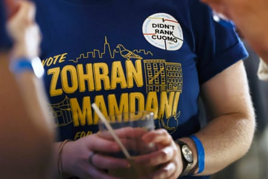

W hen Zohran Mamdani , a 33-year-old self-described socialist, won New York’s mayoral Democratic nomination last week over a seasoned but scandal-scarred veteran, the city’s financial elite had a meltdown.
This was the start of “hot commie summer” in the city, New York hedgevfund billionaire Daniel Loeb posted to X . John Catsimatidis, billionaire CEO of grocery chain Gristedes and friend of Donald Trump, warned on Fox Business: “If the city of New York is going socialist, I will definitely close, or sell, or move.”
CNBC financial news channel anchor Joe Kernen compared New York to Batman’s crime-riddled Gotham . “ They’re taking Wall Streeters and making them walk out onto the ice in the East River, And, and then they fall through. I mean there is a class warfare that’s going on.”
With five months until the mayoral election proper, the 1% are revolting, led by loquacious billionaire hedge funder Bill Ackman, who said he and others in the finance industry are ready to commit “hundreds of millions of dollars” into an opposing campaign. “The risk/reward of running for mayor over the next 132 days is extremely compelling as the cost in time and energy is small and the upside is enormous.”
Ackman said he was “gravely concerned” because he believed the leftwing candidate’s policies would trigger an exodus of the wealth that would destroy the tax base and undermine New York’s public services. The city under Mamdani, he posted on Wedneday, “is about to become much more dangerous and economically unviable.”
In 2021, the top 1% of New York City taxpayers paid 48% of taxes – up from 40% in 2019, according to a report from the city’s finance department. But at the same time, New York has become an increasingly unaffordable city for those outside the 1% – especially for people of color.
In a post a day later, Ackman said: “The ability for New York City to offer services for the poor and needy, let alone the average New Yorker, is entirely dependent on New York City being a business-friendly environment and a place where wealthy residents are willing to spend 183 days and assume the associated tax burden. Unfortunately, both have already started making arrangements for the exits.”
“Terror is the feeling,” Kathryn Wylde, the chief executive of the Partnership for New York City, which represents top business leaders, told CNBC on Tuesday.
Gerard Filitti, senior legal counsel at the Lawfare Project, a pro-Israel thinktank, non-profit and litigation fund, and a New Yorker with strong ties to the finance industry, said Mamdani’s nomination “marked a dangerous turning point for the city”.
“There’s big concern that businesses and the economy will be hurt. There’s already a move by business leaders and entrepreneurs to consider a move outside of the city, taking jobs and tax dollars with them, at time when the front-running candidate promises to make even more change that could destroy the economy,” Filitti said.
The anger was not necessarily purely economic. Wall Street’s decision makers have been shaken after seeing their preferred candidate, Andrew Cuomo, pushed aside despite the millions they poured into his campaign.
Fix the City, Cuomo’s political action committee (Pac), raised a record $25m to help see off Mamdani. Former New York mayor Michael Bloomberg alone gave $8.3m to the Pac.
“These are billionaires who are giving hundreds of thousands and millions of dollars to Andrew Cuomo precisely because they know we are going to tax them to make life a little bit more affordable here, in the most expensive city in the United States,” Mamdani told the New York Times before the election. “They know they can count on Cuomo because Cuomo has a track record of rewarding the political donors.”
A Mamdani supporter wears a sticker that says ‘I didn’t rank Cuomo.’Photograph: Heather Khalifa/AP
New York’s moneyed class argues it’s not about them but the future of the city. “When you look at what New York City is and has been historically – a bastion of trading and the center of world capitalism, the engine of economic growth and prosperity, the stock market, an the inspiration for other world economies to develop their markets and economies in line with New York – and now what were seeing is an economy and quality of life that is slowly deteriorating,” said Filitti.
“Now we have a front-running Democrat candidate who is promising even more radical change and that change is a threat to the structure of New York and the way people identify with New York City,” Filitti added.
It’s an argument the rich have made many times before. Many of the 1% threatened to leave after former mayor Bill de Blasio called for raising their taxes to pay for the losses the city experienced after the Covid pandemic. Wall Street poured millions into mayor Eric Adam’s 2021 campaign for office to see off more progressive candidates. They won those fights; this time, they lost.
A former Wall Street CEO told Politico: “These titans of Wall Street and titans of finance are used to getting their way. They didn’t get their way. They got the opposite of their way. They got a guy who couldn’t be more disliked by them – and vice versa.”
Wall Street’s vision for the city is probably far from that shared by many other residents of a sprawling metropolis that traditionally has played host to vibrant immigrant communities from all over the world, many of them poor. It is of course, host to the Statue of Liberty on whose base is written the famous lines: “Give me your tired, your poor, Your huddled masses yearning to breathe free.”
Manhattan was also the birthplace of the Occupy Wall Street protests in the US back in 2011, which occupied the downtown Zucotti Square – blocks from Wall Street – and eventually saw protests spread across the rest of the country and the world.
Democratic progressives were quick to celebrate Mamdani’s victory. “Your dedication to an affordable, welcoming, and safe New York City where working families can have a shot has inspired people across the city. Billionaires and lobbyists poured millions against you and our public finance system. And you won,” wrote representative Alexandria Ocasio-Cortez, another progressive who won out against a more establishment candidate.
Another longtime critic of Wall Street and the billionaire class also saw a change in politics as usual. “The American people are beginning to stand up and fight back. We have seen that in the many Fighting Oligarchy events that we’ve done around the country that have drawn huge turnouts. We have seen that in the millions of people who came out for the No Kings rallies that took place this month in almost every state. And yesterday, we saw that in the Democratic primary in New York City,” senator Bernie Sanders wrote in The Guardian.
Millions will now be spent attacking Mamdani. But he has seen off one well-funded attempt to derail his campaign. Whether or not his campaign has the momentum to last until November, remains to be seen. But Wall Streeters have been put on notice that New York, and the changing nature of the Democratic party, may no longer be as amenable to their interests, or their vision for New York.